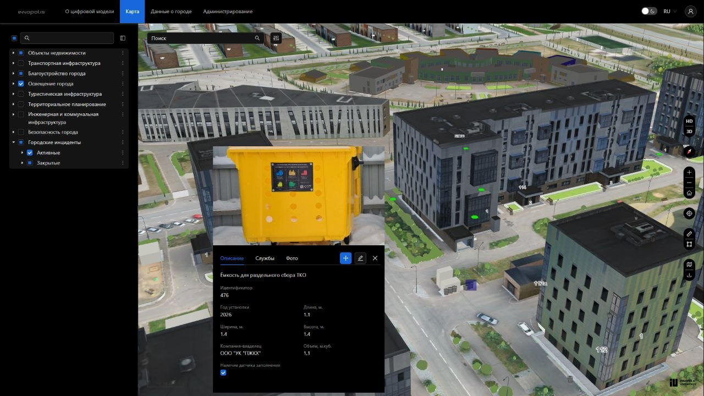
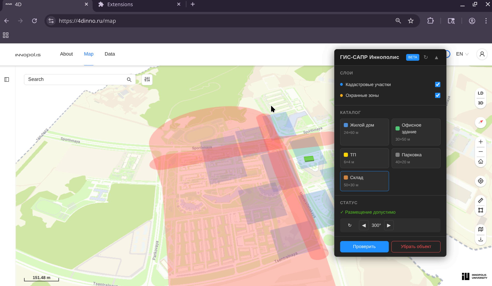

ГИС-САПР для цифрового двойника
ОЭЗ
«Иннополис»
Геоинформационные слои и валидация размещения объектов
github.com/quick-brown-foxxx/innomapcad
github.com/quick-brown-foxxx/innomapcad


Chrome Extension как демонстрация подхода
Главный вызов — получение доступов и данных, а не код